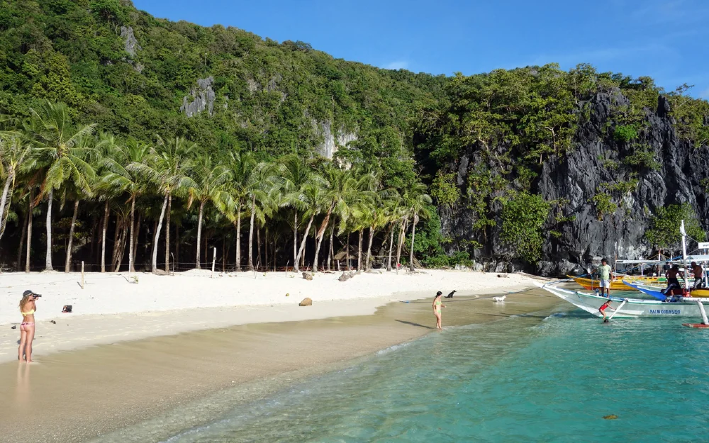
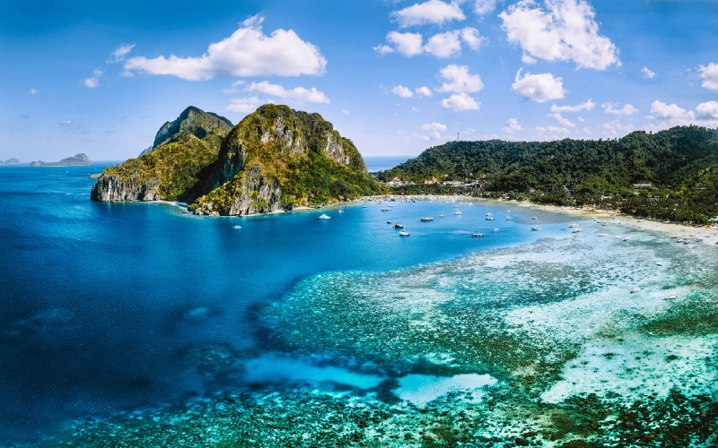
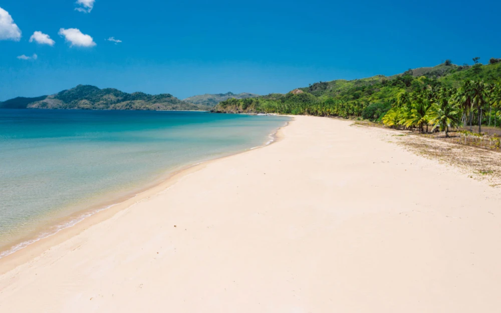

Boracay
Famous for powdery white sand beaches and crystal-clear water.

Explore world-famous beaches, historic towns, cultural landmarks, and breathtaking natural wonders.
Explore DestinationsThe Philippines is an archipelago of more than 7,000 islands offering pristine beaches, vibrant festivals, rich history, and diverse landscapes. Whether you seek adventure, relaxation, or cultural experiences, there is a destination for every traveler.
Famous for powdery white sand beaches and crystal-clear water.

Known for dramatic limestone cliffs and hidden lagoons.

The surfing capital of the Philippines.